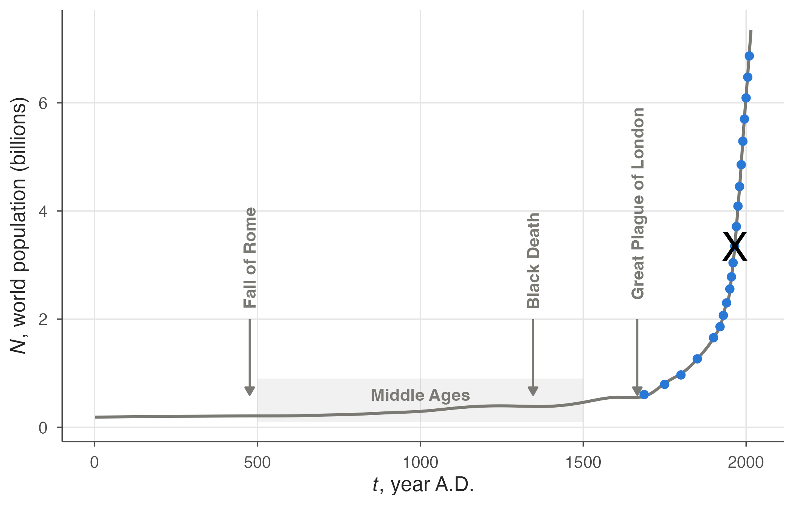
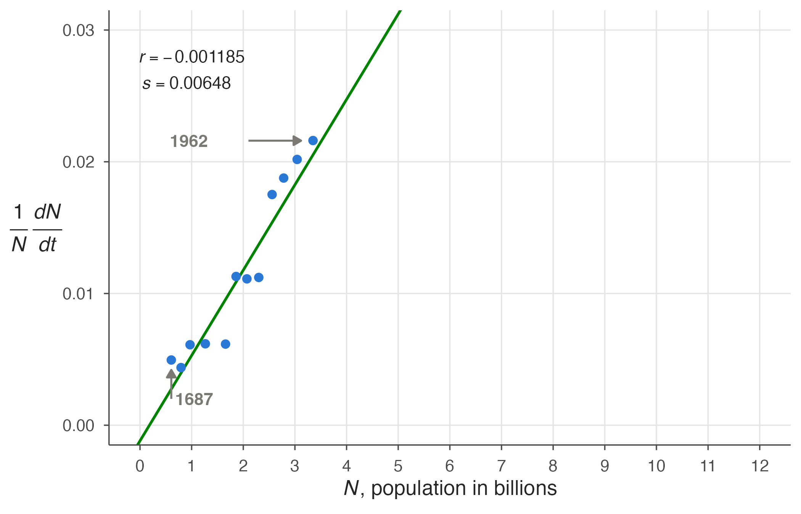
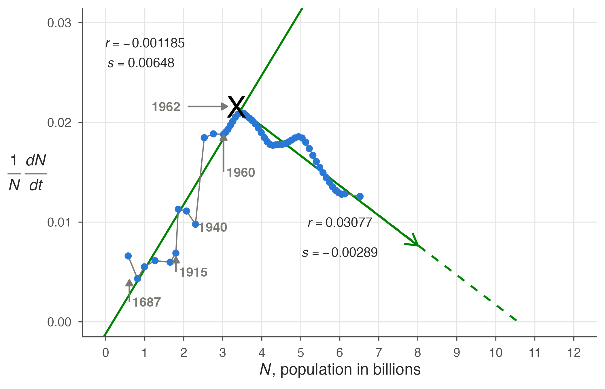
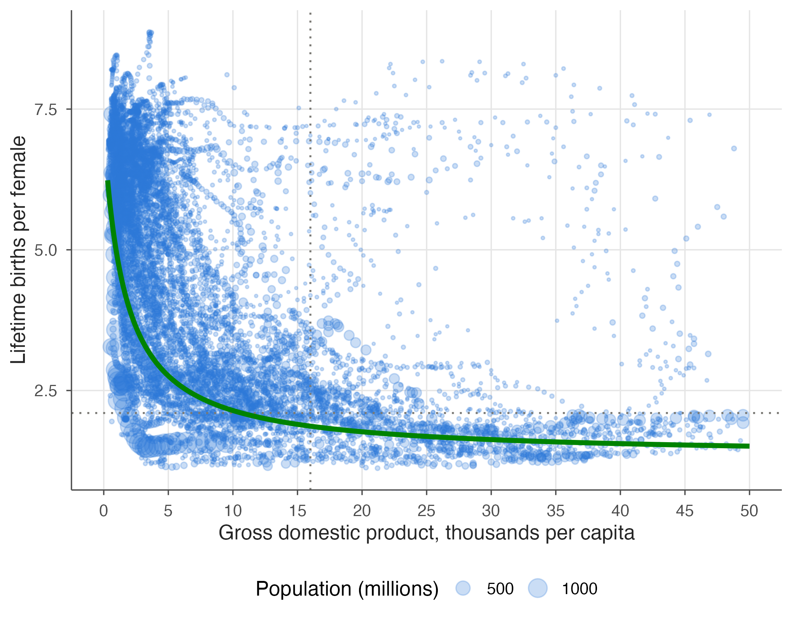
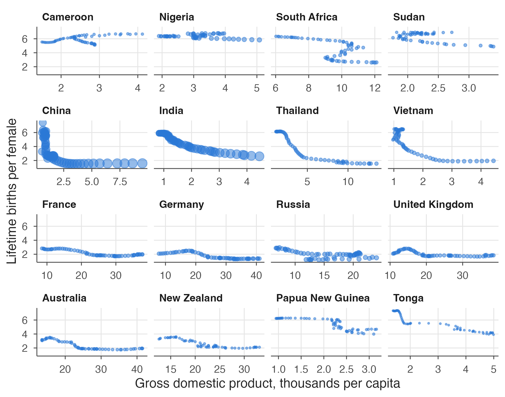
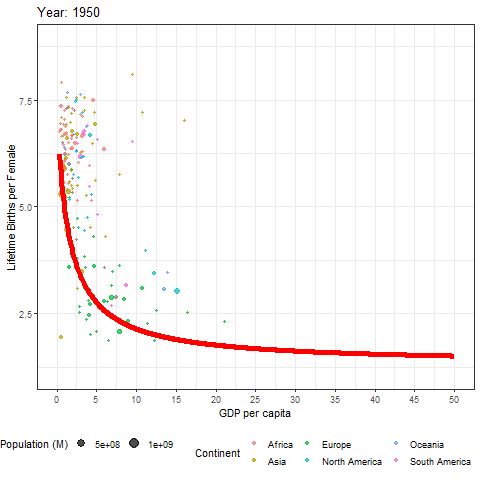

There is a challenge for this chapter. Coming this far in the book you have learned a little about population growth, and you have access to computer coding, so you are ready for something big.
Imagine for fun that you have accepted a new job in Washington as a policy fellow with the United States Geological Survey, or USGS - one of the major research branches of the US federal government. This is not farfetched; many recent doctoral graduates land such jobs at reasonably high levels. But suppose that your boss says she wants you to calculate what the world’s population will be in 2100. Other agencies have done this, but she wants a separate USGS estimate, presented in an understandable way. She can give you data from the 18th through the 21st centuries. She discloses that she is meeting with the Secretary General of the United Nations tomorrow and hopes you can figure it out today. You tell her “Sure, no problem.”
Are you crazy? No! The rest of this chapter will walk you through how to do it. We’ll start by piecing together the parts, as in Figure 4.4 — the orthologistic part, if there is one, and any exponential and logistic parts as well.
6.1 Phenomenological graph
The excerpt of data you have been given includes the world’s population in billions, by year. That is all. Figure 6.1 shows the data plotted in a phenomenological way - population size versus year, supplemented with a curve going back 2000 years to provide perspective. The blue dots show the range of data you will be using to project the future population, and the black ‘X’ marks a great demographic transition that is not obvious in this graph, but that will become glaringly so in Figure 6.3.
Code
# data from https://ourworldindata.org/world-population-growthworldPopulation <-read_csv("data/WorldPopulationAnnual12000years_interpolated_HYDEandUNto2015.csv",skip =1, col_names =c("year", "population"), col_types ="nn") |>filter(year >0) |>mutate(population = population /10^9)humanPopulation <-read_tsv("data/humans.tsv", col_types ="nn")event_arrow <-arrow(type ="closed", length =unit(0.02, "npc"))events <-tibble(x =c(476, 1346, 1666), label =c("Fall of Rome", "Black Death", "Great Plague of London"))ggplot(worldPopulation, aes(year, population)) +annotate("rect", xmin =500, xmax =1500, ymin =0.1, ymax =0.9,alpha =0.1, fill = eco_cols[["grey"]]) +annotate("text", x =1000, y =0.6, label ="Middle Ages", colour = eco_cols[["grey"]], fontface ="bold") +annotate("segment", x = events$x, xend = events$x, y =2, yend =0.6, arrow = event_arrow) +annotate("text", x = events$x, y =2, label = events$label, colour = eco_cols[["grey"]],angle =90, hjust =-0.1, fontface ="bold") +geom_line(colour = eco_cols[["grey"]]) +geom_point(data = humanPopulation) +annotate("text", label ="X", x =1965, y =3.35, size =9, colour ="black") +labs(x =expression(paste(italic(t), ", year A.D.")),y =expression(paste(italic(N), ", world population (billions)")))

Figure 6.1: World population over the past 2000 years. Blue dots mark the data used in this chapter (from 1687 on); the black X marks the great demographic transition of the mid-1960s.
Can you project global population by simply extending that curve? The population is clearly rising at an enormous rate, expanding most recently from 3 billion to 7 billion in less than half a century. Simply projecting the curve would lead to a prediction of more than 11 billion people by the middle of the 21st century, and more than 15 billion by the century’s end.
But such an approach is too simplistic. In one sense, the data are all contained in that curve, but are obscured by the phenomena themselves. We need to extract the biology inherent in the changing growth rate \(r\) as well as the ecology inherent in the changing density dependence \(s\). In other words, we want to look at data showing \(1/N\,\Delta N/\Delta t\) versus \(N\), as in Figure 4.4.
Table 6.1 shows a subset of the original data, \(t\) and \(N\), plus calculated values for \(\Delta N\), \(\Delta t\), and \(1/N\,\Delta N/\Delta t\). In row 1, for example, \(\Delta N\) shows the change in \(N\) between row 1 and row 2: $ 0.795 - 0.606 = 0.189 $ billion. Likewise, \(\Delta t\) in row 1 shows how many years elapse before the time of row 2: $ 1750 - 1687 = 63 $ years. The final column in row 1 shows the value of \(1/N\,\Delta N /\Delta t\): $ 1 / 0.606 / 63 = 0.004950495 ,$ which rounds to \(0.0050\). Row 21 has no deltas because it is the last row in the table.
Code
options(knitr.kable.NA ="") # don't print missing values# add differences and per-capita growth rate to the population datahumanPopulation_df <- humanPopulation |>mutate(dN =c(diff(population), NA), dT =c(diff(year), NA), rate =1/ population * dN / dT)knitr::kable(humanPopulation_df,col.names =c("$t$ (years)", "$N$ (billions)", "$\\Delta N$", "$\\Delta t$","$\\frac{1}{N} \\frac{\\Delta N}{\\Delta t}$"),digits =c(0, 3, 3, 0, 4))
Table 6.1: Human population numbers for analysis.
\(t\) (years)
\(N\) (billions)
\(\Delta N\)
\(\Delta t\)
\(\frac{1}{N} \frac{\Delta N}{\Delta t}\)
1687
0.606
0.189
63
0.0050
1750
0.795
0.174
50
0.0044
1800
0.969
0.296
50
0.0061
1850
1.265
0.391
50
0.0062
1900
1.656
0.204
20
0.0062
1920
1.860
0.210
10
0.0113
1930
2.070
0.230
10
0.0111
1940
2.300
0.258
10
0.0112
1950
2.558
0.224
5
0.0175
1955
2.782
0.261
5
0.0188
1960
3.043
0.307
5
0.0202
1965
3.350
0.362
5
0.0216
1970
3.712
0.377
5
0.0203
1975
4.089
0.362
5
0.0177
1980
4.451
0.405
5
0.0182
1985
4.856
0.432
5
0.0178
1990
5.288
0.412
5
0.0156
1995
5.700
0.390
5
0.0137
2000
6.090
0.384
5
0.0126
2005
6.474
0.392
5
0.0121
2010
6.866
6.2 Biological-ecological graph
Code
growth_axes <-list(scale_x_continuous(name =expression(paste(italic("N"), ", population in billions")),breaks =seq(0, 12), limits =c(0, 12)),scale_y_continuous(name =expression(paste(frac(1, italic("N")), " ", frac(italic("dN"), italic("dt")))),breaks =seq(0, 0.03, by =0.01), limits =c(0, 0.03)),theme(axis.title.y =element_text(angle =0, vjust =0.5, hjust =1)))year_arrow <-arrow(type ="closed", length =unit(0.02, "npc"))ggplot(humanPopulation_df[1:12, ], aes(x = population, y = rate)) +# rows through the mid-1960sgeom_abline(slope =0.00648, intercept =-0.001185) +geom_point() + growth_axes +annotate("text", x =1, y =0.028, label ="italic(r) == -0.001185", parse =TRUE) +annotate("text", x =0.9, y =0.026, label ="italic(s) == 0.00648", parse =TRUE) +# arrow pointing at 1962annotate("text", x =0.5, y =0.0216, label ="1962", colour = eco_cols[["grey"]], hjust =-0.1, fontface ="bold") +annotate("segment", x =2.1, y =0.0216, xend =3.12, yend =0.0216, arrow = year_arrow) +# arrow pointing at 1687annotate("text", x =0.606, y =0.002, label ="1687", colour = eco_cols[["grey"]], hjust =-0.1, fontface ="bold") +annotate("segment", x =0.606, y =0.002, xend =0.606, yend =0.0042, arrow = year_arrow)

Figure 6.2: Observed human growth rate as a function of population density through the mid-1960s (blue dots), based on the data from Table 6.1, with a line representing the average trend (green).
Figure 6.2 plots the \(N\) and \(1/N\,\Delta N/\Delta t\) columns of Table 6.1 through line 12—the mid-1960s—in blue dots, with a green line representing the average trend. A line like this can be drawn through the points in various ways—the simplest with a ruler and pen drawing what looks right. This one was done using a statistical “regression” program, with \(r\) the point at which the line intersects the vertical axis and \(s\) the line’s slope—its \(\Delta y/\Delta x\). The intrinsic growth rate \(r\) for modern, global human population is apparently negative and the slope \(s\) is unmistakably positive.
From the late 1600s to the mid 1960s, then, it’s clear that the birth rate per family was increasing as the population increased. Greater population was enhancing the population’s growth. Such growth is orthologistic, meaning that the human population has been heading for a singularity for many centuries. The singularity is not a modern phenomenon, and could conceivably have been known before the 20th century.
The negative value of \(r\), if it is real, means there is a human Allee point. If the population were to drop below the level of the intersection with the horizontal axis—in this projection, around two hundred million people—the human growth rate would be negative and human populations would decline. The Allee point demonstrates our reliance on a modern society; it suggests that we couldn’t survive with our modern systems at low population levels—although perhaps if we went back to hunter–gatherer lifestyles, this would change the growth curve. The Allee point thus indicates that there is a minimum human population we must sustain to avoid extinction. We depend on each other.
6.3 A global transition
In Figure 6.3 we add (Gapminder and ourworldindata.org) data from the mid-1960s to the present day. People living in the 1960s were completely unaware of the great demographic transition that was developing. For hundreds of years prior to this time, human populations were stuck on an orthologistic path, with a singularity ever looming and guaranteed by the positive slope. In most of the world, however, the slope abruptly turned about and negative. Not all countries of the world turned about, but on average the world did. Humanity started down a logistic-like path.
Code
fig_6_3_df <- worldPopulation |>filter(year %in%c(humanPopulation_df$year, 1915, 1940, 1960:2000)) |>mutate(dN =c(diff(population), NA), dT =c(diff(year), NA), rate =1/ population * dN / dT) # as in Table 6.1ggplot(fig_6_3_df, aes(x = population, y = rate)) +geom_abline(slope =0.00648, intercept =-0.001185) +# new downward trend after the transitionannotate("segment", x =3.35, y =0.0216, xend =8, yend =0.03077+8*-0.00289,colour = eco_cols[["green"]], linewidth =0.8, arrow =arrow(length =unit(0.4, "cm"))) +annotate("segment", x =3.35, y =0.0216, xend =10.57, yend =0,colour = eco_cols[["green"]], linewidth =0.8, linetype =2) +geom_path(colour = eco_cols[["grey"]], linewidth =0.5) +geom_point() +annotate("text", label ="X", x =3.35, y =0.0216, size =9, colour ="black") + growth_axes +annotate("text", x =6, y =0.01, label ="italic(r) == 0.03077", parse =TRUE) +annotate("text", x =6, y =0.007, label ="italic(s) == -0.00289", parse =TRUE) +annotate("text", x =1, y =0.028, label ="italic(r) == -0.001185", parse =TRUE) +annotate("text", x =0.9, y =0.026, label ="italic(s) == 0.00648", parse =TRUE) +# arrow pointing at 1962annotate("text", x =1.1, y =0.0216, label ="1962", colour = eco_cols[["grey"]], hjust =-0.1, fontface ="bold") +annotate("segment", x =2.1, y =0.0216, xend =3.12, yend =0.0216, arrow = year_arrow) +# arrow pointing at 1687annotate("text", x =0.606, y =0.002, label ="1687", colour = eco_cols[["grey"]], hjust =-0.1, fontface ="bold") +annotate("segment", x =0.606, y =0.002, xend =0.606, yend =0.0042, arrow = year_arrow) +# other yearsannotate("text", x =1.8, y =0.005, label ="1915", colour = eco_cols[["grey"]], hjust =-0.1, fontface ="bold") +annotate("segment", x =1.8, y =0.005, xend =1.8, yend =0.0065, arrow = year_arrow) +annotate("text", x =2.3, y =0.0095, label ="1940", colour = eco_cols[["grey"]], hjust =-0.1, fontface ="bold") +annotate("text", x =3.02, y =0.015, label ="1960", colour = eco_cols[["grey"]], hjust =-0.1, fontface ="bold") +annotate("segment", x =3.02, y =0.015, xend =3.02, yend =0.0188, arrow = year_arrow)

Figure 6.3: Continuation of Figure 6.2 to the present day. After the mid-1960s (black X) the growth rate turns downward; the green arrow shows the new trend, which reaches zero growth (dashed) between 10 and 12 billion.
Where the downward-sloping line crosses the horizontal axis is where population growth would cease. From this simple \(r+sN\) model, it appears that world’s population will stabilize between 10 and 12 billion. That is in line with other recently published projections.
Prior to the 1960s there were dips in the increasing growth, with World Wars I and II levelling the rate of increase worldwide, though population continued to grow rapidly. The rate also fell in 1960, corresponding to extreme social disruptions in China.
What caused this great demographic transition, averaged over the globe? The “Four Horsemen” (conquest, war, famine, and plague) commonly expected to check human populations were not a primary cause. In many regions birth control became more available. Education slowed reproduction because people got married later. Modern medicine raised survival rates, making large families unnecessary. The space program looked back at Earth and projected a fragile dot suspended in the black of space, viewed by billions. China’s one-child policy had a noticeable effect. However, so did HIV, one of the few Horsemen that has made a noticeable comeback.
Code
# Data on fertility, income, population from World Bank, UN, Gapminder.org, and moreincome_fertility_df <-read_csv("data/ch6_income_fertility_worldbank_data.csv")# a few countries to represent different continentsrepresentative_countries <-c("United Kingdom", "France", "Germany", "Russia","Australia", "New Zealand", "Papua New Guinea", "Tonga","China", "Vietnam", "India", "Thailand","South Africa", "Nigeria", "Cameroon", "Sudan")# 1950 onwards, GDP in thousands, population in millionsincome_fer_df <- income_fertility_df |>mutate(year =as.numeric(year),adjusted_gdp = adjusted_gdp /1000,population = population /10^6) |>filter(year %in%1950:2010)income_fer_df_rep <- income_fer_df |>filter(country %in% representative_countries) |>arrange(Continent, country) |>mutate(country =factor(country, levels =unique(country))) # panels grouped by continent, one row each# best-fit linefit_data <-read_csv("data/ch6_fecundity_by_income.csv")fertility_labs <-labs(y ="Lifetime births per female", x ="Gross domestic product, thousands per capita")# all countries, with trend lineggplot() +geom_point(data = income_fer_df, aes(x = adjusted_gdp, y = fertility, size = population),colour = eco_cols[["blue"]], alpha =0.25) +geom_hline(yintercept =2.1, colour = eco_cols[["grey"]], linetype ="dotted") +geom_vline(xintercept =16, colour = eco_cols[["grey"]], linetype ="dotted") +geom_line(data = fit_data, aes(x = gni, y = life_births), colour = eco_cols[["green"]], linewidth =1.5) +scale_size(range =c(0.5, 6), name ="Population (millions)") +scale_x_continuous(breaks =seq(0, 50, by =5), limits =c(0, 50)) + fertility_labs +theme(legend.title =element_text())# representative countries individuallyggplot(income_fer_df_rep, aes(x = adjusted_gdp, y = fertility, size = population)) +geom_point(alpha =0.5) +scale_size(range =c(0.5, 4)) + fertility_labs +theme(legend.position ="none") +facet_wrap(~ country, ncol =4, scales ="free_x")

(a) All countries. Each bubble is a country in one year, sized by population; the green line shows the overall trend, and grey dotted lines mark the replacement rate of 2.1 lifetime births and an income of 16 thousand per capita.

(b) Trends for representative countries from four continents, shown individually (rows, top to bottom: Africa, Asia, Europe, Oceania). Bubble size indicates population size.
Figure 6.4: Human fecundity as a function of national per capita income, 1950–2010. Data downloaded from Gapminder and ourworldindata.org. Sources of data include the World Bank, IMF, United Nations, and other contributors.
Plants and other animals have logistic growth forced upon them because of overcrowding. In humans, however, logistic growth has been largely voluntary. And there could be further developments in a lifetime. In many nations, birth rates are presently below replacement rates. In fact, in all nations with a gross national income above 16K dollars per person, the birth rate is at or below the replacement rate of 2.1 lifetime births per female (Figure 6.4). You can see how this transition happened over time here in Figure 6.6.
This change in demographic rates could conceivably allow present and future generations to voluntarily adjust the population to whatever is desired. The new question just may be: what is the minimum world population we dare have?
Returning to your supervisor’s questions, you can now tell her that, in 2100, the world’s population will be between 10 and 12 billion. And you can say “The other population projections are not far off. They are slightly different from what we calculate using this method. But they use very complicated methods so you have to cut them a little slack!”
Figure 6.5: Earth over Moon, touching the conscience of a world.

Figure 6.6: Data from Figure 6.4 shown through time. Each bubble represents a country, the size of the bubble is the country’s population, and the colour of the bubble represents its continent. Learn more about these data at ourworldindata.org.